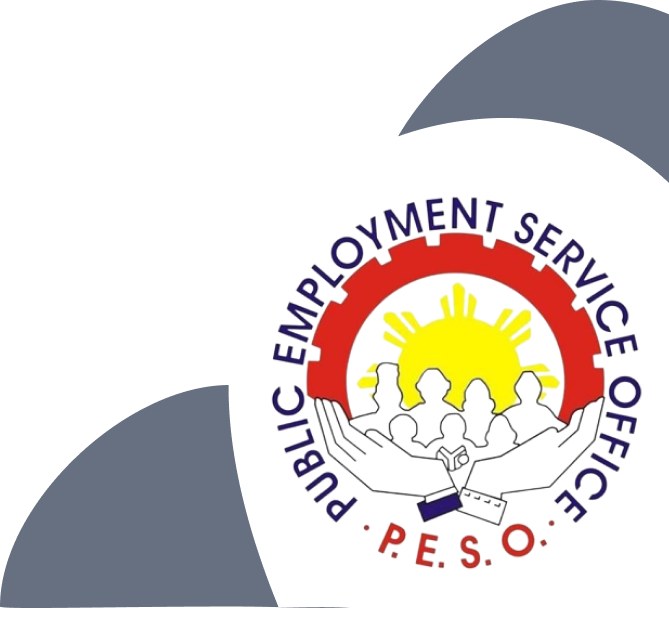

YOUR JOURNEY BEGINS
HERE!
Creating Quezon City as a City that
provides reliable and sustainable employment
facilitation services that contributes to
poverty alleviation and economic development.

Creating Quezon City as a City that
provides reliable and sustainable employment
facilitation services that contributes to
poverty alleviation and economic development.
The Public Employment Service Office (PESO) is a non-fee charging multi-employment service facility or entity established
or accredited pursuant to Republic Act No. 8759, otherwise known as the PESO Act of 1999. The Act provides that in order to
carry out full employment and equality of employment opportunities for all, and to strengthen and expand the existing employment
facilitation service machinery of the government particularly at the local levels, there shall be established in all capital
towns of provinces, key cities, and other strategic areas a Public Employment Service Office.
The PESO's are community-based and maintained largely by local government units (LGU's) and a number of non-governmental organizations (NGO's) or community-based organizations (CBO's) and state universities and colleges (SUC's). The PESO's are linked to the regional offices of the Department of Labor and Employment (DOLE) for coordination and technical supervision, and to the DOLE central office, to constitute the national employment service network.
Ensure the prompt, timely and efficient delivery of employment service and provision of information on the other DOLE programs.